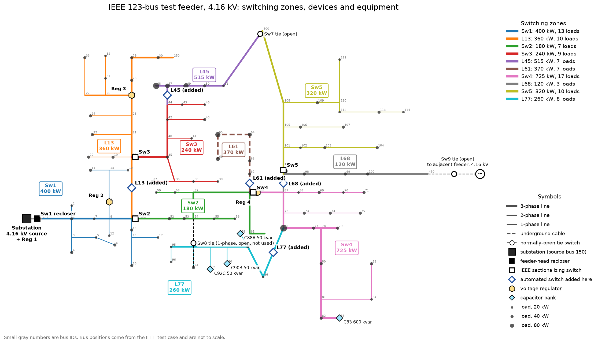

Self-Healing Feeder · Run ReportSelf-Healing Feeder · Báo cáo kết quả
Machine-learning fault location and automated restoration (FLISR) on the IEEE 123-bus distribution feeder, simulated in OpenDSS. Every number on this page is read from the latest python run.py.
Định vị sự cố bằng machine learning và tự động khôi phục cấp điện (FLISR) trên lưới phân phối IEEE 123-bus, mô phỏng bằng OpenDSS. Mọi con số trên trang được đọc từ lần chạy python run.py gần nhất.
11,448 simulated faults · run time 330 s · simulation only, not field data11,448 sự cố mô phỏng · thời gian chạy 330 giây · chỉ là mô phỏng, không phải dữ liệu thực địa · source on GitHubmã nguồn trên GitHub
New here? Click the ? on any card, chart or table (or turn on Explain at the bottom left and click anything): the guide flies there, circles it and explains it. Words with a dotted underline have a short definition, and every chart shows exact numbers on hover. Questions are answered in the Q&A.
Lần đầu xem? Nhấp nút ? ở góc bất kỳ thẻ, biểu đồ hay bảng nào (hoặc bật Giải thích ở góc trái dưới rồi nhấp vào bất cứ đâu): nhân vật hướng dẫn sẽ bay tới, khoanh lại và giải thích. Từ có gạch chân chấm chấm có định nghĩa ngắn, và mọi biểu đồ đều hiện số chính xác khi rê chuột. Các câu hỏi thường gặp nằm ở mục Hỏi đáp.
Control room demo: work a simulated fault the way a utility does, as the dispatcher, field crew, engineer or manager, from the Sw1 lockout back to normal configuration. Open the control room →
Phòng điều độ (demo): xử lý một sự cố mô phỏng như ở công ty điện, với vai trò điều độ viên, đội hiện trường, kỹ sư hoặc quản lý, từ lúc Sw1 khóa tới khi lưới trở lại bình thường. Mở phòng điều độ →
Fault zone foundTìm đúng zone sự cố
97.7%
vs 56.1% with conventional fault indicatorsso với 56.1% của bộ chỉ báo sự cố truyền thống
Average crew patrolQuãng đường tuần tra trung bình
5.1 kft
vs 39.0 kft with no fault location (−87%)so với 39.0 kft khi không định vị sự cố (−87%)
Healthy load restored by tiesPhụ tải lành được cấp lại qua tie
2,670 kW
of 7,175 kW left dark (37%), summed over 10 casestrên 7,175 kW bị mất điện (37%), cộng 10 trường hợp
Customer outageMức mất điện khách hàng (kW·minkW·phút)
−50.7%
vs manual switching; assumes 1 / 90 / 240 minso với đóng cắt thủ công; giả định 1 / 90 / 240 phút
Pass = the result meets its limit. Watch = a known weak spot to keep an eye on. Fail = something to fix before trusting the numbers.
Đạt = kết quả nằm trong giới hạn. Lưu ý = điểm yếu đã biết, cần theo dõi. Lỗi = phải sửa trước khi tin vào số liệu.
✓PassĐạt
Every fault simulation convergedMọi mô phỏng sự cố đều hội tụ100.0% of 11,448 power-flow solutions100.0% trong 11,448 lời giải trào lưu công suất
✓PassĐạt
Every restored feeder stays within limitsMọi phương án khôi phục đều trong giới hạn0.95–1.05 pu at every energized node and no line above its emergency rating, for all 10 fault zones0.95–1.05 pu ở mọi nút có điện và không đường dây nào vượt định mức khẩn cấp, cho cả 10 zone sự cố
✓PassĐạt
Every switching plan keeps the feeder radialMọi phương án đóng cắt đều giữ lưới hình tiano loops after the ties closekhông tạo vòng kín sau khi đóng tie
✓PassĐạt
ML beats the conventional methodML tốt hơn phương pháp truyền thống97.7% vs 56.1% of faults placed in the right zone97.7% so với 56.1% số sự cố được xác định đúng zone
!WatchLưu ý
High-impedance ground faultsSự cố chạm đất trở kháng caoonly 76.5% correct at 400 Ω, the known weak spot (fault current ≈ 6 A)chỉ đúng 76.5% ở 400 Ω, điểm yếu đã biết (dòng sự cố ≈ 6 A)
!WatchLưu ý
One sensor offlineMất một cảm biếnworst case is Sw4 offline: 83.2% correcttệ nhất khi mất Sw4: đúng 83.2%
✓PassĐạt
Error analysis matches this runPhân tích lỗi khớp với lần chạy nàysame out-of-fold accuracy (97.74%)cùng accuracy kiểm định chéo (97.74%)
The whole feeder, built from the study's own data. Drag to rotate and click any zone, switch or load column: it lifts out of the model and the guide explains it. Tour the zones walks through all 10; the 2D map shows the same feeder as a flat drawing.
Toàn bộ lưới, dựng từ chính dữ liệu của nghiên cứu. Kéo để xoay và nhấp vào bất kỳ zone, dao hay cột tải nào: phần đó nổi lên khỏi mô hình và nhân vật hướng dẫn sẽ giải thích. Đi qua các zone giới thiệu lần lượt cả 10 zone; bản đồ 2D vẽ cùng lưới đó dạng phẳng.
Labels:Nhãn:

Drag to rotate · click the model, then scroll to zoom · click a zone, switch or load column
Kéo để xoay · nhấp vào mô hình rồi cuộn để phóng to · nhấp vào zone, dao hay cột tải
Column = load kW · one wire per phase · grey can = pole-top transformer · black tank = recloser · white box with antenna = added switch · red raised blades = open tie · yellow tanks = regulators · pale cans = capacitors · fenced yard = substation
Cột = tải kW · mỗi pha một dây · bình xám = máy biến áp trên trụ · thùng đen = recloser · hộp trắng có ăng-ten = dao thêm vào · lưỡi đỏ dựng lên = dao liên lạc mở · thùng vàng = điều áp · bình nhạt = tụ bù · sân có rào = trạm nguồn
Red column = a bus where faults get misplaced (taller = more, redder = higher rate) · green dot = no mistakes · arrow = true zone → wrong guess (thicker = more faults). Click any of them.
Cột đỏ = bus hay bị đoán sai (cao hơn = nhiều hơn, đỏ hơn = tỉ lệ cao hơn) · chấm xanh = không sai lần nào · mũi tên = zone thật → zone bị đoán nhầm (dày hơn = nhiều hơn). Nhấp vào để xem phân tích.
Click any line to put a fault there, or pick one above. Lamps: green = closed, red = open · grey = no power · red zone = faulted · orange arrow = the model's wrong guess. Use Next to step through.
Nhấp vào bất kỳ đường dây nào để đặt sự cố, hoặc chọn ở trên. Đèn: xanh = đóng, đỏ = mở · xám = mất điện · zone đỏ = bị sự cố · mũi tên cam = model đoán sai. Bấm Tiếp để xem từng bước.
After the feeder-head recloser locks out, which of the 10 zones holds the fault? Accuracy is measured on buses the model never saw in training. The chart shows where each method breaks down: as the ground-fault resistance rises, the fault current shrinks toward the size of normal load swings.
Sau khi recloser đầu tuyến cắt hẳn, sự cố nằm ở zone nào trong 10 zone? Độ chính xác được đo trên các bus mà model chưa từng thấy khi huấn luyện. Biểu đồ cho thấy mỗi phương pháp bắt đầu sai ở đâu: điện trở chạm đất càng lớn, dòng sự cố càng nhỏ, tiến dần tới mức dao động bình thường của phụ tải.
In shortTóm lạiML puts 97.7% of faults in the right zone, against 56.1% for fault indicators, and keeps working as faults get weaker: 98.4% vs 8.4% at 100 Ω.ML xác định đúng zone cho 97.7% số sự cố, so với 56.1% của bộ chỉ báo sự cố, và vẫn hoạt động khi sự cố yếu dần: 98.4% so với 8.4% ở 100 Ω.
Conventional FPIFPI truyền thốngML, magnitudes onlyML, chỉ biên độML, full featuresML, đủ đặc trưng
Show as tableXem dạng bảng
Ω
Conventional FPIFPI truyền thống
ML, magnitudes onlyML, chỉ biên độ
ML, full featuresML, đủ đặc trưng
0.01
29.7%
99.9%
100.0%
1
67.0%
99.9%
100.0%
5
90.3%
100.0%
100.0%
10
86.3%
99.9%
99.9%
25
53.7%
98.0%
99.9%
50
28.4%
91.8%
99.9%
100
8.4%
70.8%
98.4%
200
2.3%
38.0%
93.7%
400
1.0%
22.4%
76.5%
By fault typeTheo loại sự cố (SLG, LL, LLG, 3PH)
MethodPhương pháp
All faultsTất cả sự cố
3PH
LL
LLG
SLG
Conventional FPIFPI truyền thống
56.1%
96.7%
96.0%
62.2%
40.8%
ML, magnitudes onlyML, chỉ biên độ
87.5%
100.0%
99.8%
100.0%
80.1%
ML, full featuresML, đủ đặc trưng
97.7%
100.0%
99.8%
99.9%
96.5%
If one sensor stops reporting (ML, full features)Khi một cảm biến ngừng gửi số liệu (ML, đủ đặc trưng)
259 of 11,448 faults (2.3%) went to the wrong zone. 237 of them (92%) are ground faults at 200 Ω or more, and errors rise with load (0.9% in the lightest third of scenarios, 4.1% in the heaviest). Because the model always names a zone, misses and false blames are counted per zone (one zone vs the rest).
259 trên 11,448 sự cố (2.3%) bị đoán sai zone. 237 trong số đó (92%) là sự cố chạm đất từ 200 Ω trở lên, và lỗi tăng theo mức tải (0.9% ở 1/3 kịch bản nhẹ nhất, 4.1% ở 1/3 nặng nhất). Vì model luôn chọn một zone, bỏ sót và báo nhầm được tính theo từng zone (một zone so với phần còn lại).
In shortTóm lạiMost mistakes (92%) are very weak ground faults, mostly on the busy trunk near the substation, and 64% of them land just one zone away.Phần lớn lỗi (92%) là sự cố chạm đất rất yếu, chủ yếu trên trục chính đông tải gần trạm, và 64% số lỗi chỉ lệch sang zone ngay bên cạnh.
Per zoneTheo từng zone
Zone
FaultsSố sự cố
MissedBỏ sót (FNR)
Wrongly blamedBáo nhầm (FPR)
Precision
Sw1
1,125
5.4%
0.90%
92.0%
L13
1,557
2.8%
0.48%
97.0%
Sw2
1,494
4.5%
0.57%
96.2%
Sw3
981
1.7%
0.11%
98.8%
L45
864
0.8%
0.05%
99.4%
L61
720
0.8%
0.00%
100.0%
Sw4
1,971
2.6%
0.45%
97.8%
L68
720
0.3%
0.00%
100.0%
Sw5
1,017
0.2%
0.02%
99.8%
L77
999
0.1%
0.00%
100.0%
Confusion matrixMa trận nhầm lẫn
Rows are the true zone, columns the predicted zone, in feeder order from the substation. Gray diagonal = correct. Blue cells are errors; darker means more.
Hàng là zone thật, cột là zone dự đoán, xếp theo thứ tự từ trạm ra. Đường chéo màu xám = đoán đúng. Ô xanh là lỗi; càng đậm càng nhiều.
Where the wrong answers pointCâu trả lời sai rơi vào đâu
Let the model say “not sure”Cho model nói “không chắc”
Predictions below the confidence cutoff go to a manual patrol instead. Median confidence: 1.00 when right, 0.90 when wrong.
Các dự đoán có độ tự tin dưới ngưỡng được chuyển sang tuần tra thủ công. Độ tự tin trung vị: 1.00 khi đúng, 0.90 khi sai.
Defer belowChuyển nếu dưới
Faults keptSự cố giữ lại
Accuracy on keptAccuracy phần giữ lại
Errors leftLỗi còn lại
0.50
99.9%
97.8%
247
0.70
99.1%
98.3%
195
0.80
98.6%
98.5%
166
0.90
97.9%
98.8%
130
0.95
97.2%
99.1%
97
4 · Isolation and restoration4 · Cô lập và khôi phục#
Each zone is faulted in turn. The fault is isolated, the upstream part re-closed, and a tie switch is closed only if a power flow shows every voltage, current and the radial layout stay within limits.
Lần lượt cho sự cố ở từng zone. Zone sự cố được cô lập, phần phía trên được đóng điện lại, và dao liên lạc chỉ được đóng khi tính trào lưu công suất cho thấy mọi điện áp, dòng điện và cấu trúc hình tia đều nằm trong giới hạn.
In shortTóm lại10 of 10 switching plans stay within the voltage, current and radial limits; voltage, not current, is what stops more load from being picked up.10/10 phương án đóng cắt nằm trong giới hạn điện áp, dòng điện và hình tia; chính điện áp, không phải dòng điện, là thứ cản việc cấp lại thêm phụ tải.
Questions a reviewer or interviewer is likely to ask, answered with this run's numbers. Search (Vietnamese works with or without accents), filter by topic, or open them all.
Những câu người xét duyệt hoặc phỏng vấn hay hỏi, trả lời bằng số liệu của lần chạy này. Có thể tìm kiếm (gõ có dấu hay không dấu đều được), lọc theo chủ đề, hoặc mở tất cả.
ShowingĐang hiện15/15
What problem does this project solve?Dự án này giải quyết vấn đề gì?
When a fault trips the feeder-head recloser to lockout, the whole feeder goes dark and a crew has to patrol the line to find the fault. This study (1) tells the operator which of the 10 switching zones holds the fault, using only measurements that reclosers and automated switches already record, and (2) isolates that zone and restores the healthy ones through tie switches, closing a tie only when a power flow shows every limit is met. Utilities call this FLISR.
Khi sự cố làm recloser đầu tuyến cắt hẳn (lockout), cả tuyến mất điện và đội sửa chữa phải đi dọc đường dây để tìm chỗ hỏng. Nghiên cứu này (1) chỉ ra sự cố nằm ở zone nào trong 10 zone, chỉ dùng số đo mà recloser và dao tự động vốn đã ghi lại, và (2) cô lập zone đó rồi cấp điện lại cho các zone còn lành qua dao liên lạc (tie), chỉ đóng tie khi tính trào lưu công suất cho thấy mọi giới hạn đều đạt. Các công ty điện gọi hệ thống này là FLISR.
Is this real utility data?Đây có phải dữ liệu thật của công ty điện không?
No. Everything is simulated in OpenDSS on the IEEE 123-bus test feeder: 11,448 faults of every type, fault resistances from 0.01 to 400 Ω, random load levels and 1% sensor noise. Simulation gives exact labels and lets every bus be faulted. Real high-impedance faults arc and change over time, so the high-resistance results here are an upper bound, and a real deployment would have to be validated on field event records.
Không. Toàn bộ là mô phỏng trong OpenDSS trên lưới thử nghiệm IEEE 123-bus: 11,448 sự cố đủ các loại, điện trở sự cố từ 0.01 đến 400 Ω, mức tải ngẫu nhiên và nhiễu cảm biến 1%. Mô phỏng cho nhãn chính xác và cho phép tạo sự cố ở mọi bus. Sự cố trở kháng cao ngoài thực tế có hồ quang và thay đổi theo thời gian, nên kết quả ở điện trở cao chỉ là giới hạn trên; muốn dùng thật thì phải kiểm chứng bằng bản ghi sự kiện ngoài hiện trường.
How can I run it myself?Tôi tự chạy thử thế nào?
Clone the repository, create a Python environment and install requirements.txt. Then python run.py runs the full study (6–8 minutes) and python scripts/error_analysis.py adds the error breakdown (about a minute). Both rebuild this page at the end. To run without installing anything, use the Kaggle notebook in notebooks/.
Clone repo, tạo môi trường Python và cài requirements.txt. Sau đó python run.py chạy toàn bộ nghiên cứu (6–8 phút) và python scripts/error_analysis.py thêm phần phân tích lỗi (khoảng 1 phút). Cả hai đều tự dựng lại trang này khi chạy xong. Muốn chạy mà không cài gì thì dùng notebook Kaggle trong notebooks/.
Was AI used to build this?Dự án có dùng AI hỗ trợ không?
Yes. It was built with AI-assisted development (Claude Code), as the README states. Every assumption is marked in shf/config.py and every number on this page comes from code that anyone can rerun and check.
Có. Dự án được làm với sự hỗ trợ của AI (Claude Code), như README đã ghi. Mọi giả định đều được đánh dấu trong shf/config.py và mọi con số trên trang đều đến từ code mà ai cũng có thể chạy lại và kiểm tra.
Why not just report accuracy? What do FNR and FPR mean here?Sao không chỉ báo accuracy? FNR và FPR ở đây nghĩa là gì?
Accuracy (97.7%) hides which faults are missed and where the wrong answers go. The model always names one of 10 zones, so misses and false blames are counted per zone, one zone against the rest:
FNR: share of a zone's faults that were placed somewhere else.
FPR: share of other zones' faults that were blamed on this zone.
The worst FNR is Sw1 at 5.4% and the worst FPR is Sw1 at 0.9%; zones at the ends of the feeder stay at or below 0.8% FNR. The full table is in the error analysis.
Accuracy (97.7%) che mất việc sự cố nào bị bỏ sót và câu trả lời sai rơi vào đâu. Model luôn chọn 1 trong 10 zone, nên bỏ sót và báo nhầm được tính theo từng zone, một zone so với phần còn lại:
FNR: tỉ lệ sự cố của zone đó bị đoán sang zone khác.
FPR: tỉ lệ sự cố ở zone khác bị đổ cho zone này.
FNR cao nhất là Sw1 với 5.4%, FPR cao nhất là Sw1 với 0.9%; các zone ở cuối tuyến có FNR không quá 0.8%. Bảng đầy đủ ở mục Phân tích lỗi.
Which faults does the model miss most, and why?Model hay bỏ sót loại sự cố nào, và tại sao?
Weak line-to-ground faults. 237 of the 259 errors (92%) are ground faults at 200 Ω or more. At 400 Ω the error rate is 23.5%; for three-phase faults it is 0.0%.
The reason is physics: a 400 Ω fault on a 2.4 kV phase draws about 6 A, while devices on the main trunk carry hundreds of amps of load, so the fault is about 1% of the signal, the same size as sensor noise. Heavier load makes it worse: the error rate is 0.9% in the lightest third of load scenarios and 4.1% in the heaviest third.
Sự cố chạm đất một pha có dòng nhỏ. 237 trên 259 lỗi (92%) là sự cố chạm đất từ 200 Ω trở lên. Ở 400 Ω tỉ lệ sai là 23.5%; với sự cố ba pha là 0.0%.
Lý do là vật lý: sự cố 400 Ω trên pha 2.4 kV chỉ tạo khoảng 6 A, trong khi thiết bị trên trục chính mang dòng tải hàng trăm ampe, nên dòng sự cố chỉ cỡ 1% tín hiệu, ngang nhiễu cảm biến. Tải càng nặng càng khó: tỉ lệ sai là 0.9% ở 1/3 kịch bản tải nhẹ nhất và 4.1% ở 1/3 nặng nhất.
When the model is wrong, where does it point? Does that matter?Khi model sai, nó đoán sang đâu? Điều đó có quan trọng không?
Usually next door. 64% of errors are off by exactly one zone and 86% stay on the same path from the substation; the largest pair is Sw2 → Sw1 (41 faults). The model leans toward the substation (51% of errors): when a fault is tiny, only the feeder-head device still sees a change.
It matters because a wrong zone means the faulted section is not the one switched out, so re-closing or tie restoration could re-energize the fault. Real schemes guard against this by checking for fault current after each switching step; this study does not yet simulate those consequences.
Thường là zone ngay bên cạnh. 64% số lỗi lệch đúng 1 zone và 86% nằm trên cùng một đường đi từ trạm ra; cặp nhầm nhiều nhất là Sw2 → Sw1 (41 sự cố). Model có xu hướng đoán về phía trạm (51% số lỗi): khi sự cố quá nhỏ thì chỉ thiết bị đầu tuyến còn thấy thay đổi.
Điều này quan trọng vì đoán sai zone nghĩa là đoạn bị cắt ra không phải đoạn đang sự cố, nên khi đóng lại hoặc cấp điện qua tie có thể đóng điện vào đúng chỗ sự cố. Hệ thống thật chặn việc này bằng cách kiểm tra dòng sự cố sau mỗi bước đóng cắt; nghiên cứu này chưa mô phỏng các hậu quả đó.
Why does the conventional method do so badly?Sao phương pháp truyền thống lại kém như vậy?
Fault passage indicators flag when current exceeds a fixed pickup (here 2× peak load for phase current, plus a residual-current threshold for ground), and the fault is placed after the deepest flagged device. That works for three-phase and line-to-line faults (96.7% and 96.0% correct) but not for ground faults (40.8%):
High-resistance faults stay below pickup, so on 25.8% of all faults no device flags at all.
A bolted ground fault collapses that phase's voltage, single-phase loads beyond it drop out, and downstream devices raise false ground flags (29.7% correct at 0.01 Ω).
Real schemes add directional elements, so this baseline is on the pessimistic side.
Bộ chỉ báo dòng sự cố (FPI) bật cờ khi dòng vượt ngưỡng cố định (ở đây là 2 lần dòng tải đỉnh cho dòng pha, cộng một ngưỡng dòng dư cho chạm đất), rồi sự cố được xác định nằm sau thiết bị bật cờ xa nhất. Cách này tốt với sự cố ba pha và hai pha (đúng 96.7% và 96.0%) nhưng kém với chạm đất (40.8%):
Sự cố điện trở cao không vượt ngưỡng, nên ở 25.8% tổng số sự cố không thiết bị nào bật cờ.
Sự cố chạm đất trực tiếp làm sụp điện áp pha đó, các tải một pha phía sau rớt ra, và thiết bị phía dưới bật cờ chạm đất giả (chỉ đúng 29.7% ở 0.01 Ω).
Hệ thống thật có thêm phần tử định hướng, nên baseline này hơi bi quan.
How do you know the model is not memorizing the test data?Làm sao biết model không “học thuộc” dữ liệu kiểm tra?
Validation is grouped by fault bus (5-fold GroupKFold): every test fault sits on a bus the model never saw a fault at during training, so near-duplicate rows (same bus, different resistance) cannot leak into the test.
An early version still scored 99.9% with simple magnitude features, which was too good to be true: with only three fixed load levels the model had memorized “normal” current. Randomizing feeder-wide and per-load demand removed the leak and produced the realistic gap shown here (87.5% with magnitudes only vs 97.7% with full features).
Kiểm định được chia nhóm theo bus sự cố (GroupKFold 5 phần): mọi sự cố dùng để kiểm tra nằm ở bus mà model chưa từng thấy sự cố khi huấn luyện, nên các dòng gần giống nhau (cùng bus, khác điện trở) không lọt sang tập kiểm tra.
Phiên bản đầu vẫn đạt 99.9% chỉ với đặc trưng biên độ đơn giản, tốt đến mức đáng ngờ: chỉ có 3 mức tải cố định nên model đã học thuộc dòng điện “bình thường”. Ngẫu nhiên hóa phụ tải toàn tuyến và từng tải đã bịt chỗ rò rỉ đó và cho ra khoảng cách thực tế như trên trang (87.5% khi chỉ dùng biên độ so với 97.7% khi đủ đặc trưng).
What does the model actually look at?Model thực sự nhìn vào những gì?
For each of the 10 devices: phase currents, residual (zero-sequence) current, phase voltages, and how much each changed from just before the fault to during it, plus the change in negative-sequence current. A recloser's event record holds all of these.
Instantaneous magnitudes alone (what a basic SCADA poll returns) give 87.5%. Adding the before/after change gives 97.7%, and for 100 Ω ground faults lifts accuracy from 70.8% to 98.4%. The classifier is gradient-boosted trees (scikit-learn HistGradientBoosting).
Với mỗi thiết bị trong 10 thiết bị: dòng các pha, dòng dư (thứ tự không), điện áp các pha, và mức thay đổi của từng đại lượng từ ngay trước sự cố sang lúc sự cố, cộng thêm thay đổi dòng thứ tự nghịch. Bản ghi sự kiện của recloser có đủ các số này.
Chỉ dùng biên độ tức thời (thứ mà một lần hỏi vòng SCADA cơ bản trả về) đạt 87.5%. Thêm phần thay đổi trước/sau đạt 97.7%, và với sự cố chạm đất 100 Ω thì tăng từ 70.8% lên 98.4%. Bộ phân loại là cây tăng cường gradient (HistGradientBoosting của scikit-learn).
What happens if a sensor stops reporting?Nếu một cảm biến ngừng gửi số liệu thì sao?
During training one random device is blanked on 15% of the rows, so the model learns to cope. With any single device offline it still places 83.2%–95.5% of faults correctly; the worst case is Sw4 offline (83.2%).
Khi huấn luyện, 15% số dòng bị xóa ngẫu nhiên số liệu của một thiết bị, nên model học cách xoay xở. Khi bất kỳ một thiết bị nào mất tín hiệu, model vẫn đoán đúng 83.2%–95.5% số sự cố; trường hợp tệ nhất là mất Sw4 (83.2%).
What does “let the model say not sure” mean in practice?“Cho model nói không chắc” nghĩa là gì trong thực tế?
The model gives a probability for each zone. When the top probability is below a cutoff, the system does not act on the guess and the crew patrols as it does today. Wrong answers have a median confidence of 0.90, right ones 1.00, so a 0.95 cutoff defers only 2.8% of faults, raises accuracy on the rest to 99.1%, and cuts errors from 259 to 97 (−63%).
Model đưa ra xác suất cho từng zone. Khi xác suất cao nhất thấp hơn ngưỡng, hệ thống không hành động theo dự đoán đó và đội sửa chữa đi tuần như hiện nay. Câu trả lời sai có độ tự tin trung vị 0.90, câu đúng là 1.00, nên với ngưỡng 0.95 chỉ 2.8% số sự cố bị chuyển sang tuần tra tay, accuracy phần còn lại lên 99.1%, và số lỗi giảm từ 259 xuống 97 (−63%).
Why is not all healthy load restored?Sao không cấp điện lại được hết phần phụ tải còn lành?
A tie can only carry what the other source and the long path can support. Every pickup is tested with a power flow and rejected if any node leaves 0.95–1.05 pu, a line exceeds its emergency rating, or the feeder stops being radial. On this 4.16 kV feeder voltage is the limit that binds, not current. Across the 10 cases the ties restored 2,670 of the 7,175 kW left dark (37%); the rest waits for the repair.
Một dao liên lạc chỉ mang được phần tải mà nguồn bên kia và đường dây dài chịu được. Mỗi lần nhận thêm tải đều được kiểm tra bằng tính trào lưu công suất và bị loại nếu có nút nào ra ngoài 0.95–1.05 pu, có đường dây vượt định mức khẩn cấp, hoặc lưới không còn hình tia. Trên tuyến 4.16 kV này, giới hạn quyết định là điện áp chứ không phải dòng điện. Qua 10 trường hợp, các tie cấp lại được 2,670 trên 7,175 kW bị mất điện (37%); phần còn lại chờ sửa xong.
Where does the 50.7% outage reduction come from, and how far can I trust it?Con số giảm 50.7% mức mất điện từ đâu ra, tin được đến đâu?
Customer outage is counted in kW·min: kW interrupted × minutes interrupted. The automated case assumes 1 min to isolate and restore by tie, the manual case 90 min, and repair 240 min. Zones are weighted by line length (faults per mile assumed equal). The saving ranges from 9% (fault in Sw1) to 88% (fault in L68).
The number moves directly with those time assumptions, so read it as an illustration, not a forecast.
Mức mất điện của khách hàng được tính bằng kW·phút: kW bị mất × số phút mất. Trường hợp tự động giả định 1 phút để cô lập và cấp lại qua tie, thủ công 90 phút, sửa chữa 240 phút. Các zone được tính trọng số theo chiều dài đường dây (giả định số sự cố trên mỗi dặm như nhau). Mức tiết kiệm dao động từ 9% (sự cố ở Sw1) đến 88% (sự cố ở L68).
Con số thay đổi trực tiếp theo các giả định thời gian này, nên chỉ xem là minh họa, không phải dự báo.
What are the limitations, and what would you do next?Giới hạn là gì, và bước tiếp theo là gì?
False alarms: add healthy, no-fault cases; today the dataset holds only faults, so false alarms on a normal feeder are not measured.
Realistic weak faults: model arcing, time-varying high-impedance faults instead of fixed resistances.
Consequences of a wrong zone: simulate re-closing onto the fault and add a fault-current check after each switching step.
Fairer baseline: compare against fault indicators with directional elements.
Field data: validate on real event records from a utility.
Báo động giả: thêm các ca lưới bình thường, không sự cố; hiện dataset chỉ có ca sự cố nên chưa đo được báo động giả.
Sự cố yếu thực tế hơn: mô hình hóa sự cố trở kháng cao có hồ quang, thay đổi theo thời gian thay vì điện trở cố định.
Hậu quả khi đoán sai zone: mô phỏng việc đóng lại vào chỗ sự cố và thêm bước kiểm tra dòng sự cố sau mỗi lần đóng cắt.
Baseline công bằng hơn: so với bộ chỉ báo sự cố có phần tử định hướng.
Dữ liệu thực địa: kiểm chứng bằng bản ghi sự kiện thật của một công ty điện.
No question matches. Try another word.Không có câu nào khớp. Thử từ khác.
Short definitions of the terms used on this page. On the page itself, dotted-underlined words show the same definition when you hover or tap them.
Định nghĩa ngắn các thuật ngữ dùng trên trang. Ngay trong trang, các từ gạch chân chấm chấm cũng hiện định nghĩa này khi rê chuột hoặc chạm vào.
FLISR
Fault Location, Isolation and Service Restoration: find the faulted section, switch it out, and bring power back to everyone else.Định vị sự cố, cô lập và khôi phục cấp điện: tìm đoạn hỏng, cắt nó ra, rồi cấp điện lại cho phần còn lại.
Recloser / lockout
A line breaker that trips on a fault and recloses a few times; if the fault is still there it stays open (lockout).Máy cắt trên đường dây, cắt khi có sự cố rồi tự đóng lại vài lần; nếu sự cố vẫn còn thì mở hẳn (lockout).
ZoneZone (vùng)
The section of feeder between switching devices: the smallest piece that can be switched out.Đoạn lưới nằm giữa các thiết bị đóng cắt: phần nhỏ nhất có thể cắt ra riêng.
Tie switchDao liên lạc (tie)
A normally-open switch that connects this feeder to another source to pick up load.Dao thường mở, khi đóng sẽ nối tuyến này với nguồn khác để nhận tải.
FPI
Fault passage indicator: flags when a current above a fixed pickup flows through it.Bộ chỉ báo dòng sự cố đi qua: bật cờ khi có dòng vượt ngưỡng cố định chạy qua.
SLG / LL / LLG / 3PH
Fault types: single line-to-ground, line-to-line, double line-to-ground, three-phase.Loại sự cố: một pha chạm đất, hai pha chạm nhau, hai pha chạm đất, ba pha.
High-impedance faultSự cố trở kháng cao
A fault through a large resistance (a tree, dry ground), so the fault current is small and hard to detect.Sự cố qua điện trở lớn (cây, đất khô), dòng sự cố nhỏ nên khó phát hiện.
pu (per unit)pu (đơn vị tương đối)
A value divided by its nominal value: 1.00 pu voltage is exactly nominal.Giá trị chia cho giá trị định mức: điện áp 1.00 pu là đúng định mức.
ANSI C84.1 Range A
The US service-voltage band: 114–126 V on a 120 V base (0.95–1.05 pu).Dải điện áp cung cấp chuẩn của Mỹ: 114–126 V trên nền 120 V (0.95–1.05 pu).
RadialHình tia (radial)
Tree-shaped feeder with one path from the source to every load and no loops; feeder protection relies on it.Lưới dạng cây, mỗi phụ tải chỉ có một đường từ nguồn và không có vòng kín; hệ thống bảo vệ dựa vào điều này.
kW·minkW·phút
Size of an outage: kW interrupted × minutes interrupted.Mức mất điện: số kW bị mất × số phút mất.
kft
Thousand feet of line (1 kft ≈ 305 m).Nghìn feet đường dây (1 kft ≈ 305 m).
FNR
False negative rate of a zone: the share of its faults that were placed in another zone.Tỉ lệ bỏ sót của một zone: phần sự cố của zone đó bị đoán sang zone khác.
FPR
False positive rate of a zone: the share of other zones' faults that were blamed on it.Tỉ lệ báo nhầm của một zone: phần sự cố ở zone khác bị đổ cho zone này.
Precision
When the model names this zone, how often it is right.Khi model chọn zone này, tỉ lệ chọn đúng là bao nhiêu.
Confusion matrixMa trận nhầm lẫn
Table of true zone (rows) against predicted zone (columns); cells off the diagonal are mistakes.Bảng zone thật (hàng) so với zone dự đoán (cột); các ô ngoài đường chéo là lỗi.
Grouped cross-validationKiểm định chéo theo nhóm
Testing only on buses the model never saw in training, so the score reflects new locations.Chỉ kiểm tra trên các bus model chưa thấy khi huấn luyện, nên điểm số phản ánh vị trí mới.
ConfidenceĐộ tự tin
The probability the model gives to the zone it picks (0 to 1).Xác suất model gán cho zone nó chọn (từ 0 đến 1).
OpenDSS
EPRI's open-source simulator for electric distribution systems.Phần mềm mô phỏng lưới phân phối điện mã nguồn mở của EPRI.
Everything behind the numbers: the data you can download, what every column means, the formulas, and the chain of reasoning from the question to the result. Rerun it all with python run.py.
Mọi thứ đằng sau các con số: dữ liệu có thể tải về, ý nghĩa từng cột, các công thức, và chuỗi suy luận từ câu hỏi tới kết quả. Chạy lại toàn bộ bằng python run.py.
How the reasoning goesCách tư duy để ra kết quả
Where is the fault after the head recloser locks out?Sau khi recloser đầu tuyến cắt hẳn, sự cố nằm ở đâu?Today a crew patrols the whole feeder: 39.0 kft of line.Hiện nay đội sửa chữa phải đi kiểm tra cả tuyến: 39.0 kft đường dây.
How can that be tested without a real outage?Làm sao kiểm chứng mà không cần sự cố thật?Model the IEEE 123-bus feeder in OpenDSS and add 5 automated switches, giving 10 zones.Mô hình hóa lưới IEEE 123-bus trong OpenDSS và thêm 5 dao tự động, chia thành 10 zone.
What evidence would a model need?Model cần bằng chứng gì?Simulate every fault type at every bus, 9 ground-fault resistances, random load and 1% sensor noise: 11,448 labeled faults.Mô phỏng mọi loại sự cố ở mọi bus, 9 mức điện trở chạm đất, tải ngẫu nhiên và nhiễu cảm biến 1%: 11,448 sự cố có nhãn.
What is the bar to beat?Mốc cần vượt qua là gì?Replay the conventional fault-indicator rule on the same faults: 56.1% correct.Chạy lại quy tắc bộ chỉ báo sự cố truyền thống trên cùng các sự cố: đúng 56.1%.
Which signals carry the answer?Tín hiệu nào chứa đáp án?Use what a recloser's event record already holds, plus the before/after change that strips out load.Dùng đúng những gì bản ghi sự kiện của recloser có sẵn, cộng thêm phần thay đổi trước/sau để loại dòng tải.
Is the model really learning, not memorizing?Model có thật sự học, hay chỉ học thuộc?Gradient-boosted trees, tested only on buses never seen in training; an early 99.9% exposed a data leak that randomized load fixed. Result: 97.7%.Cây tăng cường gradient, chỉ kiểm tra trên bus chưa thấy khi huấn luyện; lần đầu đạt 99.9% đã lộ ra rò rỉ dữ liệu, và việc ngẫu nhiên hóa tải đã sửa. Kết quả: 97.7%.
Where and why does it fail?Model sai ở đâu, vì sao?Per-zone FNR/FPR and the confusion matrix point to weak ground faults on the busy trunk; the fault-current formula explains why (about 6 A).FNR/FPR theo zone và ma trận nhầm lẫn chỉ ra sự cố chạm đất yếu trên trục chính đông tải; công thức dòng sự cố giải thích lý do (khoảng 6 A).
What should happen once the zone is known?Biết zone rồi thì làm gì?Isolate it, re-close upstream, and close a tie only if a power flow passes every limit: 2,670 kW of healthy load restored.Cô lập zone đó, đóng lại phía trên, và chỉ đóng tie khi tính trào lưu đạt mọi giới hạn: cấp lại 2,670 kW phụ tải lành.
What does it change for customers?Khách hàng được lợi gì?Average patrol 5.1 kft instead of 39.0 kft, and about 50.7% less outage under the stated switching times.Quãng tuần tra trung bình 5.1 kft thay vì 39.0 kft, và mức mất điện giảm khoảng 50.7% với giả định thời gian đóng cắt đã nêu.
The formulas behind the numbersCác công thức đằng sau con số
Each card shows the equation, what every symbol means, and an example with this study's numbers.
Mỗi thẻ gồm công thức, ý nghĩa từng ký hiệu, và một ví dụ dùng số liệu của nghiên cứu này.
1How big is a fault current?Dòng sự cố lớn cỡ nào?
Fault currentDòng sự cố
I_f ≈ V_LN / (|Z_th| + R_f)
WhereTrong đó
V_LN
phase-to-ground voltage: 4.16 kV ÷ √3 ≈ 2,402 V on this feederđiện áp pha – đất: 4.16 kV ÷ √3 ≈ 2,402 V trên tuyến này
Z_th
impedance of the network up to the fault, small near the substationtổng trở của lưới tính tới chỗ sự cố, nhỏ khi ở gần trạm
R_f
fault resistance: a tree branch, dry soil, an arcđiện trở sự cố: cành cây, đất khô, hồ quang
ExampleVí dụAt Rf = 400 Ω the fault draws about 2,402 V ÷ 400 Ω ≈ 6 A, roughly 1% of the hundreds of amps on the trunk. That is why weak ground faults hide in the noise.Với Rf = 400 Ω, dòng sự cố chỉ khoảng 2,402 V ÷ 400 Ω ≈ 6 A, cỡ 1% so với hàng trăm ampe trên trục chính. Vì vậy sự cố chạm đất yếu bị lẫn vào nhiễu.
2Zero- and negative-sequence currentDòng thứ tự không và thứ tự nghịch
Zero-sequenceThứ tự không
I_0 = (I_a + I_b + I_c) / 3
Negative-sequenceThứ tự nghịch
I_2 = (I_a + a²·I_b + a·I_c) / 3
WhereTrong đó
I_a, I_b, I_c
the three phase currents as phasors (size and angle)dòng ba pha dạng phasor (có độ lớn và góc)
a = 1∠120°
rotates a phasor by one third of a turnxoay một phasor đi một phần ba vòng
I_0
non-zero only when current returns through the groundchỉ khác 0 khi có dòng quay về qua đất
I_2
grows when the three phases become unbalancedtăng khi ba pha mất cân bằng
ExampleVí dụA line-to-ground fault raises I₀ at every device between the substation and the fault, and nowhere beyond it: a strong clue to where the fault is.Sự cố chạm đất làm I₀ tăng ở mọi thiết bị nằm giữa trạm và chỗ sự cố, còn phía sau thì không: đây là manh mối mạnh về vị trí sự cố.
3The before/after changePhần thay đổi trước/sau sự cố
Current changeThay đổi dòng
ΔI = |I_fault − I_pre|
Voltage changeThay đổi áp
ΔV = |V_fault| − |V_pre|
WhereTrong đó
I_pre, V_pre
readings just before the faultsố đo ngay trước khi sự cố xảy ra
I_fault, V_fault
readings during the faultsố đo trong lúc sự cố
ExampleVí dụSubtracting the pre-fault reading removes the load current, so what is left is mostly the fault itself. Adding these columns lifts accuracy from 87.5% to 97.7%.Trừ đi số đo trước sự cố là loại bỏ dòng tải, phần còn lại chủ yếu do chính sự cố gây ra. Thêm các cột này nâng accuracy từ 87.5% lên 97.7%.
4How a conventional fault indicator decidesBộ chỉ báo sự cố truyền thống quyết định thế nào
Phase flagCờ pha
max(|I_a|, |I_b|, |I_c|) > 2·I_pk
Ground flagCờ chạm đất
|3·I_0| > max(0.5·I_pk, 1.2·|3·I_0|_pk)
WhereTrong đó
I_pk
current through the device at peak loaddòng qua thiết bị lúc tải đỉnh
|3·I_0|_pk
ground current that flows normally at peak loaddòng chạm đất có sẵn lúc tải đỉnh khi không có sự cố
ExampleVí dụThe fault is placed just after the deepest device that raises a flag. The rule works on three-phase faults (96.7% right) but not on ground faults (40.8%).Sự cố được xác định nằm ngay sau thiết bị bật cờ xa nhất. Quy tắc này tốt với sự cố ba pha (đúng 96.7%) nhưng kém với sự cố chạm đất (40.8%).
5Scoring the modelChấm điểm model
Accuracy
Acc = (Σ TP_z) / N
Miss rate of zone zTỉ lệ bỏ sót
FNR_z = FN_z / (TP_z + FN_z)
False-blame rateTỉ lệ báo nhầm
FPR_z = FP_z / (FP_z + TN_z)
Precision
Prec_z = TP_z / (TP_z + FP_z)
WhereTrong đó
TP_z
faults in zone z that the model placed in zsự cố ở zone z được đoán đúng là z
FN_z
faults in z placed somewhere elsesự cố ở z bị đoán sang zone khác
FP_z
faults elsewhere that were blamed on zsự cố ở nơi khác bị đổ cho z
TN_z
faults elsewhere correctly kept out of zsự cố ở nơi khác và không bị đổ cho z
N
all simulated faultstổng số sự cố mô phỏng
ExampleVí dụAccuracy is 97.7%. The worst miss rate is zone Sw1 at 5.4%; the worst false-blame rate is zone Sw1 at 0.9%.Accuracy là 97.7%. Tỉ lệ bỏ sót cao nhất là zone Sw1 với 5.4%; tỉ lệ báo nhầm cao nhất là zone Sw1 với 0.9%.
6Average crew patrolQuãng tuần tra trung bình
Average patrolTuần tra trung bình
L̄ = (ℓ_1 + ℓ_2 + … + ℓ_N) / N
One faultMột sự cố
ℓ_k = L_zk if ẑ_k = z_k, otherwise L_F
WhereTrong đó
z_k, ẑ_k
the true and the predicted zone of fault kzone thật và zone dự đoán của sự cố k
L_z
line length of zone zchiều dài đường dây của zone z
L_F
line length of the whole feeder (39.0 kft): a wrong answer is charged a full patrolchiều dài cả tuyến (39.0 kft): đoán sai bị tính như đi hết tuyến
ExampleVí dụWith the model the average patrol is 5.1 kft instead of 39.0 kft.Khi có model, quãng tuần tra trung bình là 5.1 kft thay vì 39.0 kft.
7Customer outage in kW·minMức mất điện tính bằng kW·phút
Outage sizeMức mất điện
E = Σ P × t
SavingMức giảm
S = 1 − E_auto / E_manual
Whole feederToàn tuyến
S_F = Σ w_z·S_z, w_z = L_z / ΣL
WhereTrong đó
P, t
kW without power during a step, and the step's minutessố kW mất điện trong một bước, và số phút của bước đó
E_auto, E_manual
outage with automated switching (1 min) vs manual switching (90 min); repair takes 240 minmức mất điện khi đóng cắt tự động (1 phút) so với thủ công (90 phút); sửa chữa mất 240 phút
w_z
share of line length: longer zones fault more oftentỉ lệ chiều dài dây: zone càng dài càng dễ gặp sự cố
ExampleVí dụFor the whole feeder S = 50.7%. It ranges from 9% (fault in Sw1) to 88% (fault in L68).Trên toàn tuyến S = 50.7%. Con số dao động từ 9% (sự cố ở Sw1) đến 88% (sự cố ở L68).
8Limits every restoration must meetGiới hạn mọi phương án khôi phục phải đạt
VoltageĐiện áp
0.95 ≤ V_pu ≤ 1.05
CurrentDòng điện
I ≤ 1.25 × I_rated
RadialHình tia
n_closed = n_bus − 1
WhereTrong đó
V_pu
voltage ÷ nominal; 1.00 pu is 120 V at a home (ANSI C84.1 Range A: 114–126 V)điện áp ÷ định mức; 1.00 pu là 120 V tại nhà dân (ANSI C84.1 Range A: 114–126 V)
I_rated
normal rating of the conductor; 125% is its emergency ratingđịnh mức dòng bình thường của dây; 125% là định mức khẩn cấp
n_closed, n_bus
closed line sections and energized buses: a tree always has one fewer branch than nodessố đoạn dây đang đóng và số bus có điện: một cây luôn có số nhánh ít hơn số nút đúng 1
ExampleVí dụA tie is closed only if all three hold after the power flow; that is why some healthy load stays dark.Dao liên lạc chỉ được đóng khi cả ba điều kiện đều đạt sau khi tính trào lưu; vì vậy có phần tải lành vẫn phải chờ.
All simulated faults, one row each: the true zone, fault type, resistance, load level and 150 measurements.Toàn bộ sự cố mô phỏng, mỗi sự cố một dòng: zone thật, loại sự cố, điện trở, mức tải và 150 số đo.
Errors per bus: faults simulated, misplaced by the model and by fault indicators (the 3D error map).Lỗi theo từng bus: số sự cố mô phỏng, số bị model và bộ chỉ báo đoán sai (bản đồ lỗi 3D).
The IEEE 123-bus OpenDSS model files the simulation starts from (on GitHub).Các file mô hình OpenDSS của lưới IEEE 123-bus, điểm xuất phát của mô phỏng (trên GitHub).
–
What a row of the dataset meansMột dòng dữ liệu nghĩa là gì
‹dev› is one of the 10 measuring devices (Sw1 … L77), so each fault has 10 × 15 = 150 measurement columns.
‹dev› là một trong 10 thiết bị đo (Sw1 … L77), nên mỗi sự cố có 10 × 15 = 150 cột số đo.
ColumnCột
MeaningÝ nghĩa
UnitĐơn vị
bus
Faulted bus (IEEE number)Bus bị sự cố (số hiệu IEEE)
–
zone
True zone: the answer the model has to learnZone thật: đáp án model phải học
–
ftype
Fault type: SLG, LL, LLG or 3PHLoại sự cố: SLG, LL, LLG hoặc 3PH
–
phases
Faulted phase(s): 1 = a, 2 = b, 3 = cPha bị sự cố: 1 = a, 2 = b, 3 = c
–
r
Fault resistanceĐiện trở sự cố
Ω
scenario, load_mult
Loading scenario and feeder-wide load level (0.3–1.1 × peak)Kịch bản tải và mức tải toàn tuyến (0.3–1.1 × đỉnh)
–
converged
Whether the power flow solvedTrào lưu công suất có hội tụ không
–
‹dev›_Ia, _Ib, _Ic
Phase current magnitude during the faultBiên độ dòng pha lúc sự cố
A
‹dev›_dIa, _dIb, _dIc
Change in phase current, |Ifault − Ipre|Mức thay đổi dòng pha, |Isự cố − Itrước|
A
‹dev›_Va, _Vb, _Vc
Phase voltage at the deviceĐiện áp pha tại thiết bị
pu
‹dev›_dVa, _dVb, _dVc
Change in voltage magnitude, |Vfault| − |Vpre|Mức thay đổi biên độ điện áp, |Vsự cố| − |Vtrước|
pu
‹dev›_I0
Zero-sequence current |(Ia + Ib + Ic) / 3|Dòng thứ tự không |(Ia + Ib + Ic) / 3|
A
‹dev›_dI0, _dI2
Change in zero- and negative-sequence currentMức thay đổi dòng thứ tự không và thứ tự nghịch
A
Hi! Explain mode is on: click any card, chart, table or the 3D model and I will explain it. Click me to turn it off.Chào bạn! Chế độ giải thích đang bật: nhấp vào bất kỳ thẻ, biểu đồ, bảng hay mô hình 3D nào, mình sẽ giải thích. Nhấp vào mình để tắt.